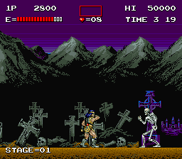

Castlevania, 1986
Castlevania was first released in Japan in September 1986 for the Family Computer Disk System
. In May 1987, it was released on cartridge for the Nintendo Entertainment System in North America
and then Europe in 1988.
Castlevania is the first game in the series. It depicts the exploits of a vampire hunter named
Simon Belmont, who inherited a whip brimming with holy power from his father.
Castlevania consists of six linear stages with a boss at the end of each stage. The stages
represent areas of Dracula's decrepit castle, and the enemies are typically taken from horror
literature, lore and films. Castlevania is an action-adventure platformer that emphasizes
precision and timing. Players begin the game with four lives and five Hearts.
Simon's primary weapon is his whip, the Vampire Killer. The Vampire Killer can be upgraded
to boost attack strength and length. Upgrades and items are found by striking candelabras or by killing enemies.
